Lake Ontario Record
This project documents the shoreline of Lake Ontario through images both related to people and independent of them. By observing what unfolds along the water’s edge, the work reflects how the presence of water subtly structures the atmosphere of a place and the lives formed within it.
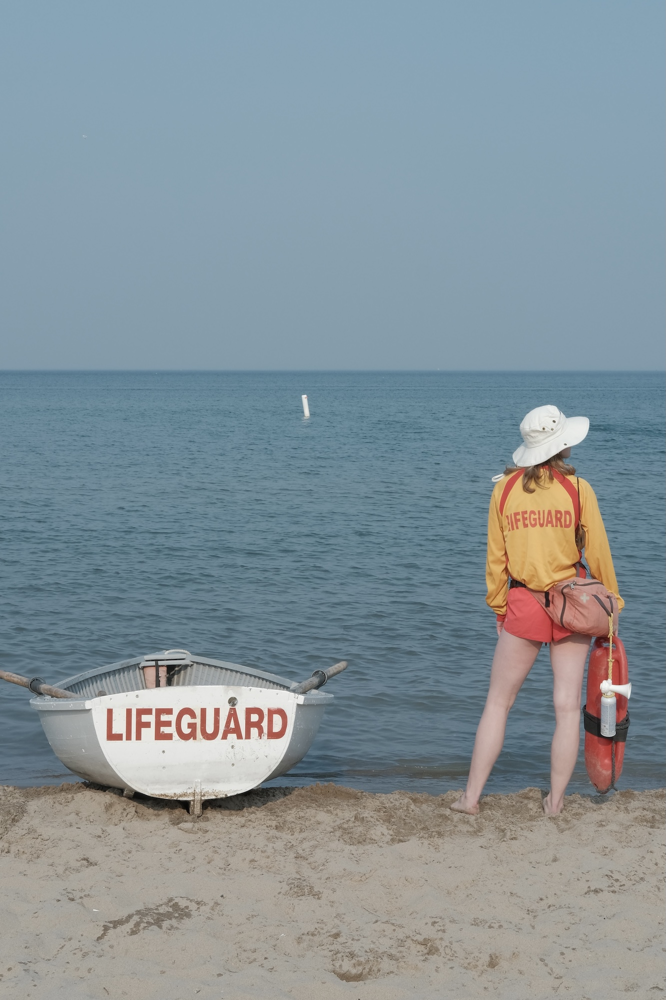
The rhythm of water echoes the breathing of living things. Ecosystems and communities formed around it often carry an innate sense of quietness, as if shaped by the calm presence of the water itself.
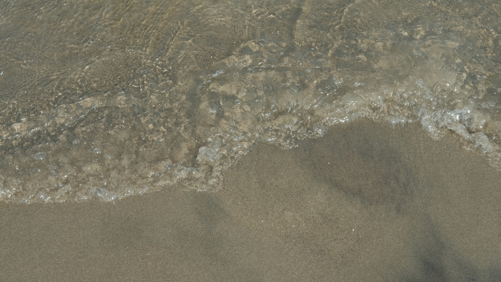
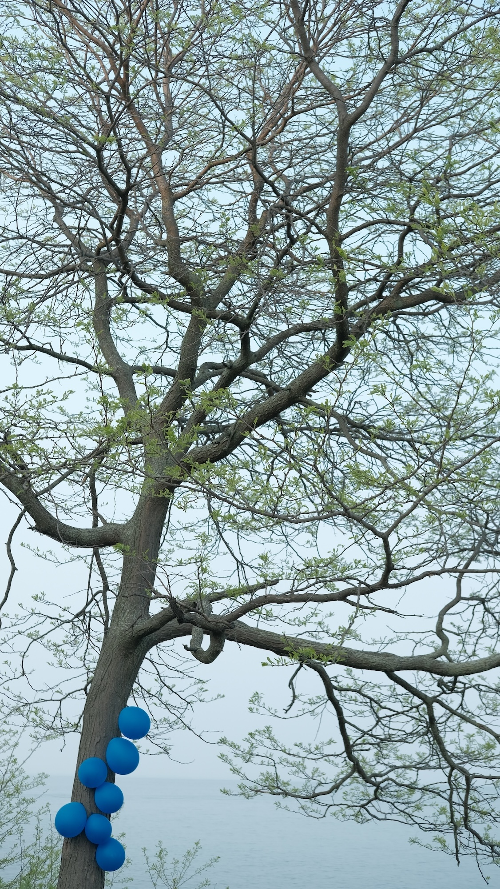
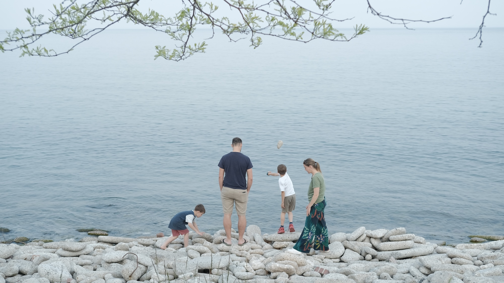
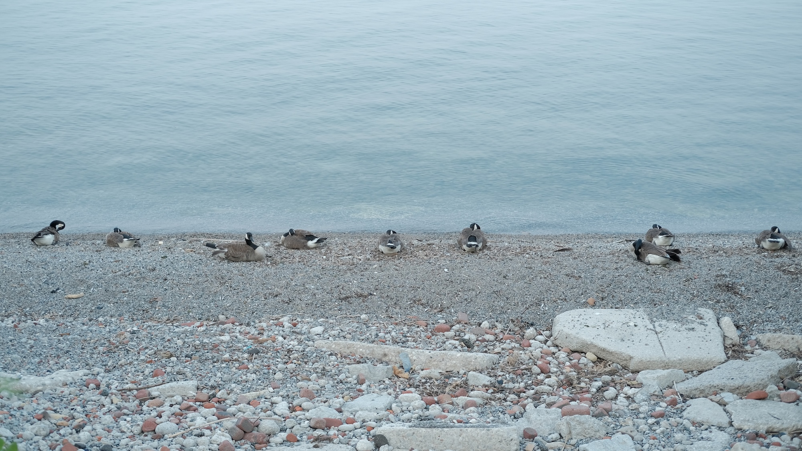
As a source of life, the shoreline becomes a shared ground for humans and other species, where no presence holds privilege.
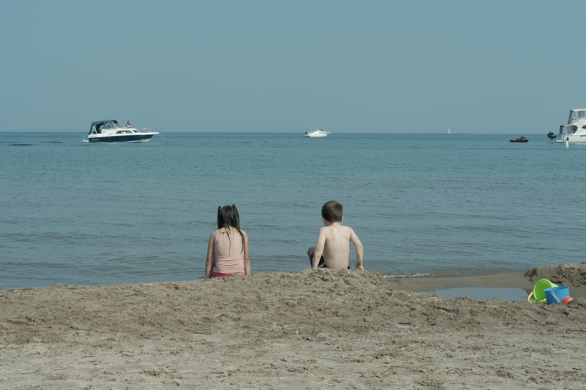
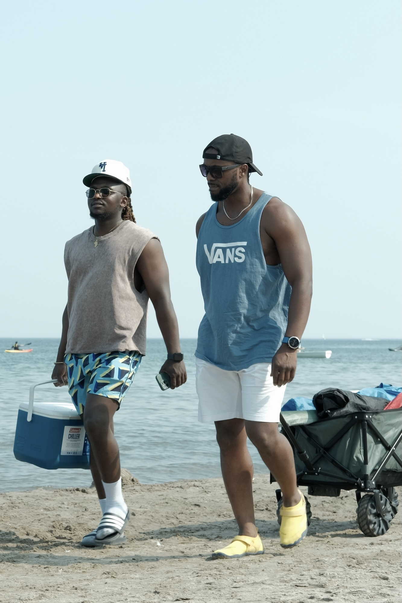
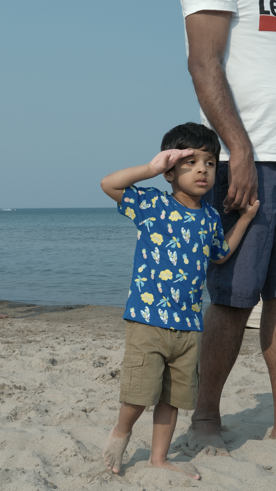
In a place marked by long winters, time along the shoreline becomes particularly precious. Removed from the networks of the digital age, it offers a space where slower moments and human connection can quietly take shape.
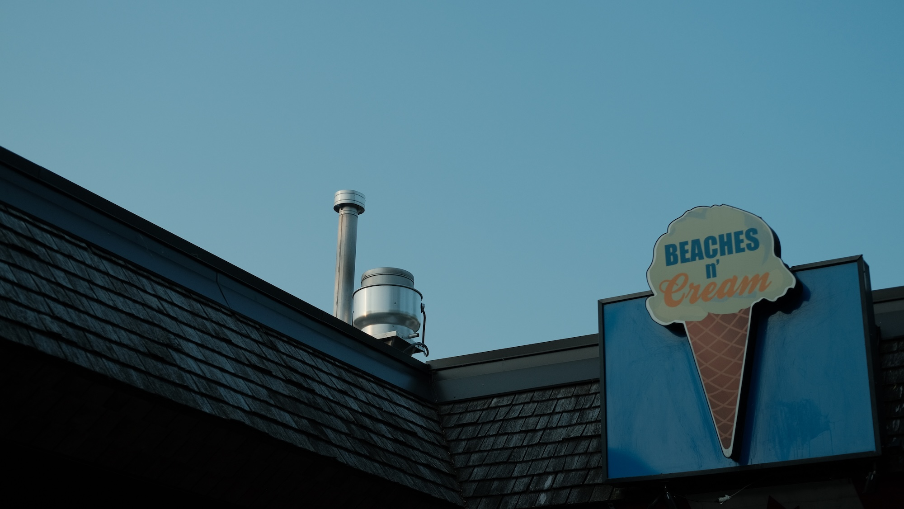
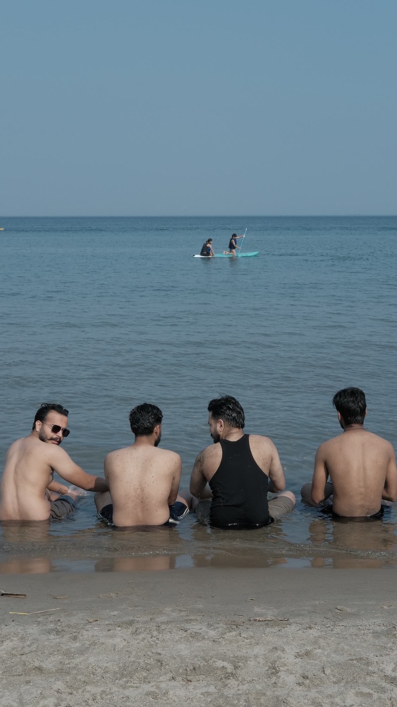
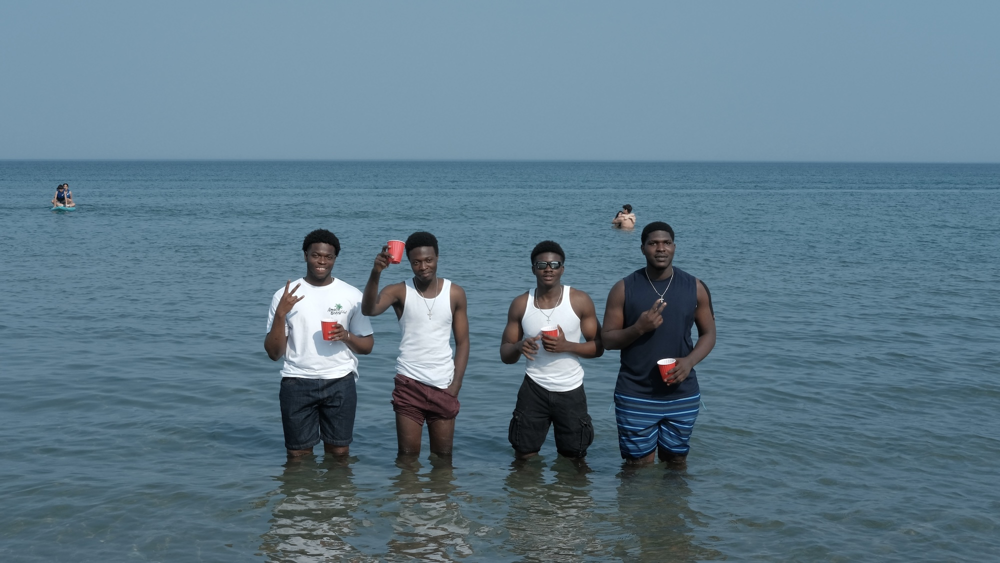
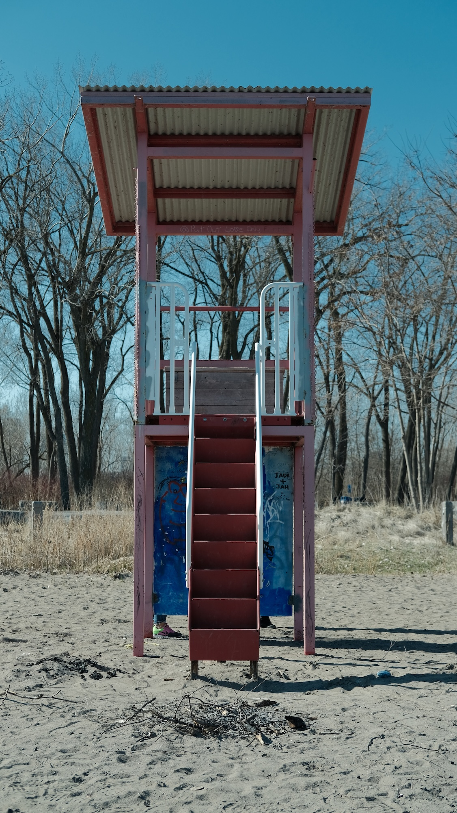
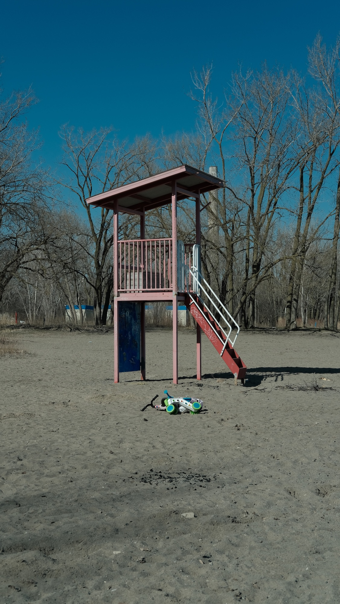